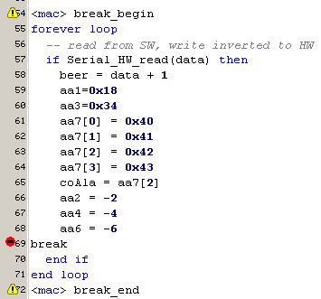
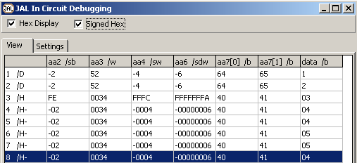
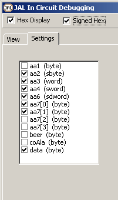

march 2006
JAL In Circuit Debugger
Introduction
Most common ways I debug programs are
Here an experimental method is described to improve method 2, in the following ways:
The idea is to select the piece of code to investigate, by marking it's beginning and it's end. Next step is to let the IDE determine all the JAL-variables used in this selection. Then any breakpoint set in this selection, will write all the detected variables to some output device (in general the serial/USB port). The outputted variables are then catched by the uploader/programmer and can be viewed by the user.
Selected Code
Here an example of the selected code is shown. At the moment selection is doen by JALcc macros, but in the future, this should be set to the special markers in the gutter (already shown in the picture below).

Uploader
Here an example of the catched output by the uploader (PIC_USB_downloader). This uploader can detect the type of the variables and show the variables indifferent notations (Decimal, Hex, signed Hex).

The user can select the signals to be displayed.
These settings are stored in the normal projectfile.

Syntax
Break_Begin [param1]
Break [param2]
Break_End